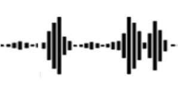
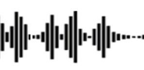
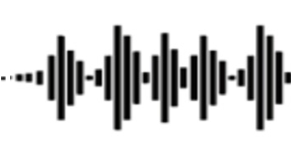
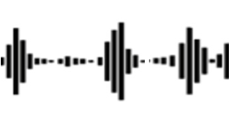

TANGO: Co-Speech Gesture Video Reenactment with Hierarchical Audio-Motion Embedding and Diffusion Interpolation
Haiyang Liu
1
,
Xingchao Yang
2
,
Tomoya Akiyama
2
,
Yuantian Huang
2
,
Qiaoge Li
,
Shigeru Kuriyama
2
,
Takafumi Taketomi
2
1
The University of Tokyo
,
2
CyberAgent AI Lab
🤗 Huggingface Space (Try it!)
arXiv
Video
Data
Code
Your browser does not support the video tag.
Video 0
Your browser does not support the video tag.
Video 1
Your browser does not support the video tag.
Video 2
Your browser does not support the video tag.
Video 3
Your browser does not support the video tag.
Video 4
Your browser does not support the video tag.
Video 5
Your browser does not support the video tag.
Video 6
Your browser does not support the video tag.
Video 7
Your browser does not support the video tag.
Video 8
Your browser does not support the video tag.
Video 9
Show-Oliver
60s Reference Video + Unseen Target Speech




Co-Speech Gesture Video Generated from TANGO
Your browser does not support the video tag.
🎧